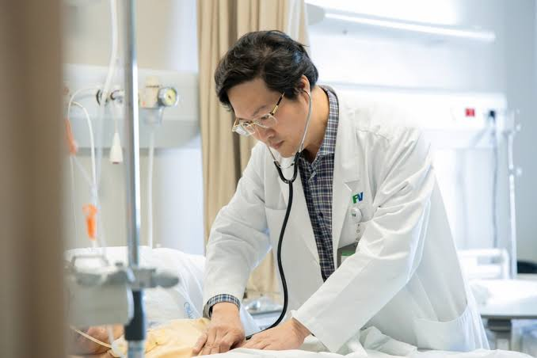
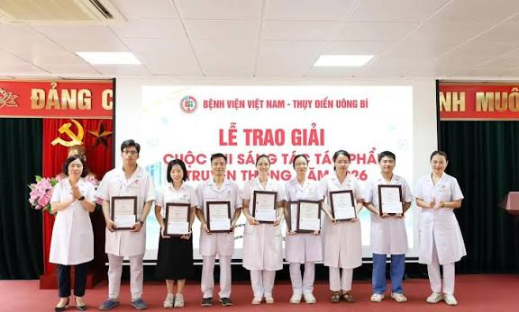
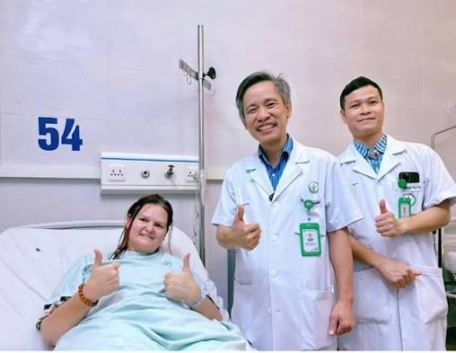

Giới thiệu
Trang chủ / Giới thiệu
BỆNH VIỆN NEU MEDICAL
Trí – Đức – Chuyên – Tâm
Vươn tầm y tế hiện đại
Lấy cảm hứng từ truyền thống đào tạo và nghiên cứu của NEU, NEU Medical được xây dựng với định hướng kết hợp tri thức, y đức và công nghệ. Chúng tôi hướng tới một hành trình chăm sóc sức khỏe tận tâm, nơi mỗi người bệnh được lắng nghe và đồng hành.



Chính sách chất lượng
- Đặt người bệnh làm trung tâm: lắng nghe, tôn trọng và cung cấp thông tin rõ ràng trong từng bước chăm sóc.
- Phát triển đội ngũ chuyên môn: bồi dưỡng bác sĩ, điều dưỡng; kết nối đào tạo, thực hành và chia sẻ kinh nghiệm.
- Khuyến khích nghiên cứu và sáng kiến: ghi nhận các đề xuất cải tiến quy trình khám, phối hợp chuyên khoa và phục vụ cộng đồng.
- Cải tiến dịch vụ liên tục: ứng dụng công nghệ trong đăng ký khám, quản lý thông tin và tiếp nhận phản hồi của người bệnh.


An toàn · Tin cậy · Hiệu quả
Kết nối chuyên môn, y đức và công nghệ để mỗi hành trình chăm sóc đều bắt đầu từ sự tận tâm.
TỪ NỀN TẢNG TRI THỨC ĐẾN CHĂM SÓC SỨC KHỎE
70 năm
nền tảng tri thức
Hướng đến y tế hiện đại
Từ nền tảng tri thức của NEU, hướng đến kết nối đào tạo, nghiên cứu và chăm sóc sức khỏe cộng đồng.
-
· Chăm sóc sức khỏe trong kỷ nguyên số
Hoàn thiện mô hình đăng ký khám trực tuyến, tra cứu hồ sơ bác sĩ và theo dõi lịch khám. Đội ngũ chuyên môn kết hợp trải nghiệm người bệnh với cách quản lý thông tin rõ ràng, thuận tiện.
-
· Ghi nhận sáng kiến của đội ngũ y tế
Đội ngũ bác sĩ và điều dưỡng được ghi nhận qua các sáng kiến cải tiến tiếp đón, hướng dẫn người bệnh và phối hợp chăm sóc. Những đề tài thực hành của bác sĩ trẻ đóng góp vào hoạt động nghiên cứu và phát triển chuyên môn.
-
· Phát triển năng lực chuyên môn
Chú trọng bồi dưỡng bác sĩ trẻ, điều dưỡng và đội ngũ hướng dẫn thực hành; xây dựng môi trường học tập liên tục, nơi kinh nghiệm được chia sẻ giữa các chuyên khoa.
-
· Kết nối đào tạo và nghiên cứu ứng dụng
Mở rộng trao đổi chuyên môn và phát triển các hướng nghiên cứu về quản trị y tế, tổ chức quy trình khám và trải nghiệm người bệnh. Tri thức được chuyển thành những đề xuất cải tiến thiết thực.
-
· Đồng hành cùng cộng đồng
Phát triển các chương trình giáo dục sức khỏe, hướng dẫn phòng bệnh và hỗ trợ tiếp cận thông tin y tế. Những hoạt động cộng đồng trở thành một phần của định hướng chăm sóc toàn diện.
-
· Đổi mới tư duy quản trị
Lấy cảm hứng từ tinh thần đổi mới của NEU, định hướng y tế hướng đến tổ chức dịch vụ khoa học, sử dụng nguồn lực hợp lý và nâng cao chất lượng phục vụ.
-
· Bồi dưỡng đội ngũ và lan tỏa tri thức
Tinh thần đào tạo, nghiên cứu và cống hiến được chuyển thành định hướng phát triển nhân lực y tế: vững chuyên môn, sáng y đức và trách nhiệm với cộng đồng.
-
· Khởi nguồn nền tảng NEU
Ngày 25/01/1956, NEU được thành lập với tên gọi Trường Kinh tế Tài chính. Truyền thống tri thức và nghiên cứu của đại học là nền tảng cho định hướng phát triển NEU Medical.
Nền tảng lịch sử NEU: Lịch sử hình thành và phát triển Đại học Kinh tế Quốc dân ↗.